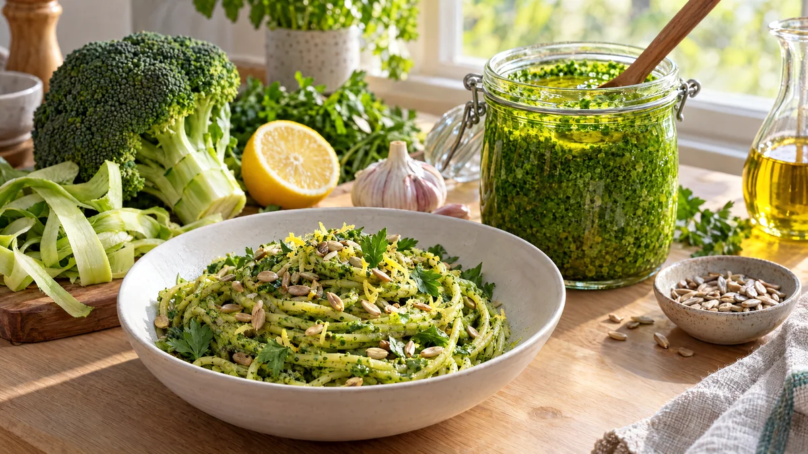

RESTFEST · RECEPTSåser & röror
Grön pesto på broccolistjälk, persilja och solrosfrön
Broccolistjälken, som oftast hamnar i soporna, en halvslokig kruka persilja och en näve solrosfrön mixas till en klargrön, len pesto med citron och vitlök. Den lyser i burken och smakar som basilikapesto, för en bråkdel av priset. Ringla den över pasta, soppa eller rostade grönsaker.
- Förberedelse
- 15 min
- Tillagning
- 5 min
- Portioner
- ca 3 dl
- Nivå
- Nybörjare
 Det här behöver du
Det här behöver du
Tryck på + vid det du behöver köpa.
Gör så här
- Skala broccolistjälken med en potatisskalare, det yttersta lagret är träigt. Skär den i små bitar, ca 1 cm.
- Koka upp lättsaltat vatten och ställ fram en skål med isvatten. Koka stjälkbitarna i 3 minuter och lägg i persiljan de sista 10 sekunderna. Lyft över allt till isvattnet, då behåller peston sin klargröna färg.
- Låt rinna av ordentligt och krama ur persiljan.
- Rosta solrosfröna i en torr stekpanna i 2–3 minuter, tills de är gyllene. Låt dem svalna.
- Mixa broccoli, persilja, basilika, solrosfrön, vitlök, citronskal, citronsaft och salt med en stavmixer eller i en matberedare. Tillsätt oljan i en tunn stråle medan du mixar, tills peston är len men har lite struktur kvar.
- Smaka av med salt, peppar och mer citron.
Dekoration och servering
- Fyll peston i en glasburk och häll ett tunt lager olivolja över ytan, så behåller den färgen. Den håller i ca 1 vecka i kylen.
- Frys peston i en isbitsform, så har du färdiga portioner till pasta och soppor.
- Vänd den med varm pasta och en skvätt pastavatten, och toppa med rostade solrosfrön och citronskal.
- Ringla den i groparna på bönkrämen i recept 2, eller över rotmoset i recept 24.
- Vill du ha en vegetarisk variant, mixa ner ½ dl riven parmesan.
Mått och ugnstemperaturer
Måtten är svenska (dl, msk, tsk, krm). Ugnstemperaturerna gäller vanlig ugn med över- och undervärme; med varmluft, sänk med 20 grader.